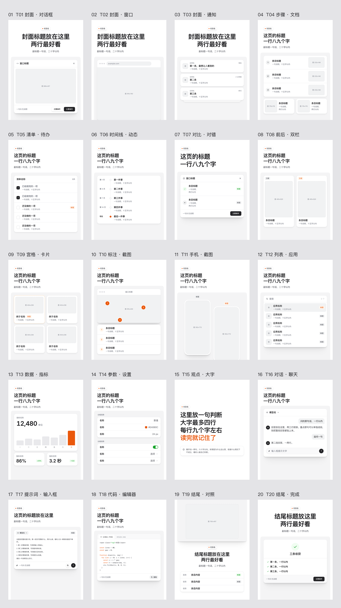
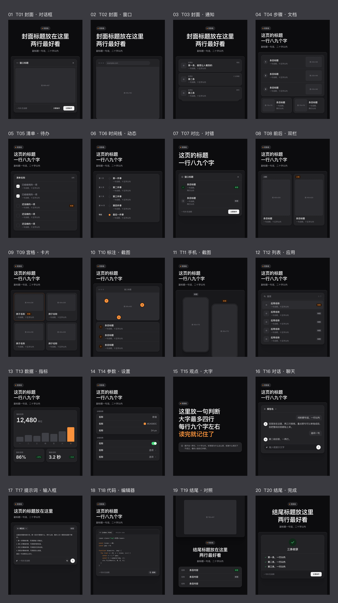
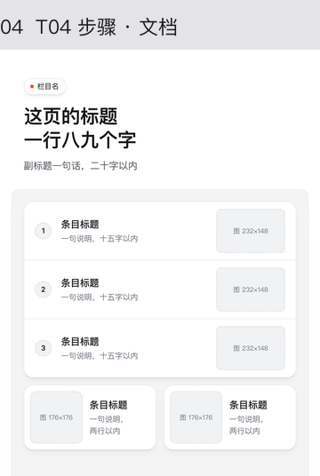
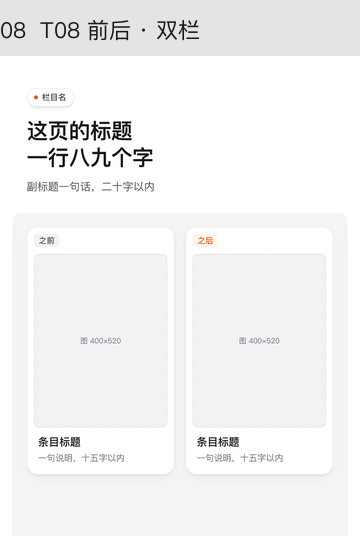
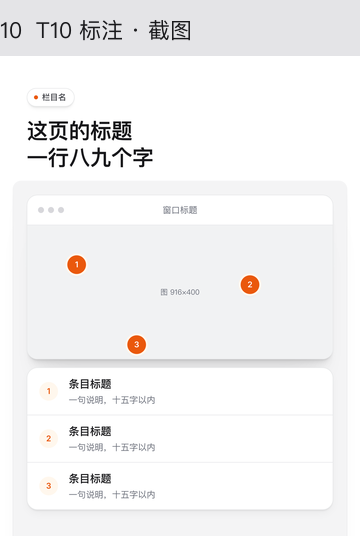
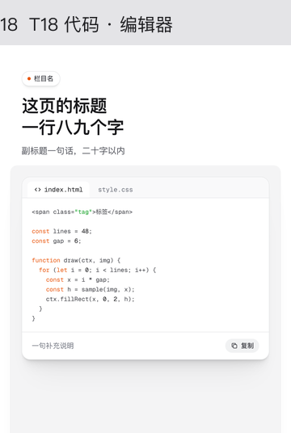

Ian XHS Carousel：先确认分镜，再把文章排成小红书图文
如果你已经有文章和真实截图，想把它们整理成一组产品界面风图文，可以先用它确认每页讲什么，再决定是否出图。
- 确认点在分镜。先列页序、标题、母版和素材来源，等待你同意后再排版。
- 20 个母版，按任务选。步骤、对比、截图、参数、代码各有位置，浅色和深色共用版式。
- 交付可继续修改。每页 1080×1440 PNG、总览图和 HTML 源文件，不只是一组位图。
- 发布仍由你负责。不写帖子标题、正文或话题标签，也不自动发帖。
已有内容和素材，再来做轮播
适合
写 AI、产品、设计、效率工具的作者；素材里有操作截图、具体步骤、前后对比、参数或短代码。你愿意先审分镜，也需要每期延续同一套界面风格。
不适合
想要手绘插画、大色块海报，或希望输入一句话就生成真实产品截图并自动发帖。若文章只有抽象观点、缺少可以展示的细节，先补内容比套母版更重要。
拿一篇已经写完的短教程和两三张清楚截图，要求它标出每页的信息任务与缺图。确认没有把文章逐段照搬成图片后，再同意制作。
本文依据固定提交的 README、Skill 说明、母版文档和渲染源码整理。没有在本次工作中安装并运行上游工具；下文的命令是操作参考，文件清单是源码定义的预期结果，不是本次运行记录。
只判断要不要用，读到这里就够了
继续读可以得到三种新增信息：分镜如何约束后续工作、七组母版如何对应素材、怎样安装并核对导出结果。五页教学方案是一份可改的编辑示例，不是工具已经生成的作品。
六步里，只有分镜后需要停下来确认
仓库把工作顺序写在 Skill 中。这里的“确认”是对页数、每页任务、版式和素材的确认，不只是回复一句“开始”。材料不足时，分镜表应暴露缺口；后续不能用假截图把缺口藏起来。
读完内容，找出要带走的结论
先区分可展示的硬内容和铺垫：数据、步骤、截图、代码属于前者；背景与旁支不一定都要上图。每页都应承担一个读者能说清的任务。
交接物：一句话目标、可保留的内容、已有素材清单。
列分镜表，等待用户确认
常见方案约五页，但不是固定页数。逐页写“讲什么、母版、图上标题、副标题、配图”。删去的旁支应说明去向，不能悄悄改写事实。
交接物：已确认的页序；未确认前不进入排版。
准备配图，把来源写清楚
配图分为现成素材、代码绘制、需要用户提供三类。流程图可以按真实逻辑绘制；产品状态、本人照片、用户作品不能凭空画一张冒充。截图要清楚，并裁掉无关工具栏。
交接物：每页对应的图片文件；需要补图的明确请求。
从母版拼出页面，保留统一样式
每页是一个带
.slide的 section，用data-layout标出母版。复制 starter、样式和脚本后填内容；这期特有的样式放在 HTML 的 style 中，不直接改共享的 xhs.css、xhs.js。交接物：HTML、样式脚本与相对路径正确的素材。
Playwright 截图，再逐页看结果
脚本查文字位置、字号、字体、强调色与占位。渲染日志之外，还要看每页和总览：有没有裁字、主图太小、连续重复母版，或浅色截图落在深色页上不协调。
交接物：逐页 PNG、总览及已处理的问题；进程成功退出不等于质量检查通过。
交付图与可编辑源码
交付时说明每页用了哪个母版、哪里做了扩展、哪些图由代码绘制，以及是否仍缺素材。需要修改某页时，可保留整组结构，只调整目标页后重渲染。
交接物：图片 + 完整 HTML 与依赖文件；帖子文案和发布在本工具范围外。
依据：SKILL.md 的“流程”与 checklist.md。流程规定不代表每次模型执行都一定遵守；第一次使用时，最值得人工看住的是第二步。
先判断这一页的任务，再挑外壳
20 个母版分成七组。名字听起来像“窗口”“通知”“编辑器”，但选择依据应是信息关系：步骤需要顺序、对比需要对应、标注需要锚点。不要因为模板好看就给文章硬添一页数据。
窄屏可左右滑动表格，查看右侧的条件与说明。
| 信息任务 | 母版编号 | 用什么内容填 | 换模板的信号 |
|---|---|---|---|
| 封面 | T01 对话框 / T02 窗口 / T03 通知 | 单个工具主图、网站界面、清单合集 | 竖屏手机主图优先考虑 T11 改作封面；要讲截图细节改用 T10。 |
| 讲做法 | T04 步骤 / T05 清单 / T06 时间线 | 先后操作、无序待办、有时间变化 | T04 适合三步，超过四步应拆页或换模板；无时间先后不要硬套 T06。 |
| 对比 | T07 对错 / T08 前后双栏 | 做法判断、两张效果图 | 两边都要图片选 T08；三种以上对象不要挤进双栏。 |
| 展示 | T09 宫格 / T10 截图标注 / T11 手机 / T12 应用列表 | 四个例子、一图多细节、竖屏界面、资源合集 | T10 适合三四处细节，超过五处应分组；横屏截图不要塞进手机。 |
| 数字 | T13 数据指标 / T14 参数设置 | 真实可比的数据、可核对的配置 | 没有比较基准就不必做数据页；参数要讲原因时改用步骤页。 |
| 文字 | T15 观点 / T16 聊天 / T17 提示词 / T18 代码 | 一句判断、真实对话、可复制提示词、短代码 | T15 一组最多一页；T17 超过 12 行宜拆；T18 不适合超过 14 行代码。 |
| 结尾 | T19 对照 / T20 完成 | 成品图配参数、三条收获 | 没有成品图不强上 T19；总结超过三条先删重、分层。 |
官方浅色 / 深色总览
下面两张来自 Ian 仓库的官方总览，展示母版结构与占位规范。它们不是本文生成的案例，也不代表你的内容已经完成排版。


四个代表母版，放大看信息结构
这些细节图直接从浅色总览裁选，未重新生成、未添加产品截图。手机上点开可看原始像素；图内占位文字和数字只说明布局，不作为效果数据。




上游建议中间连续两页别用同一母版，观点大字页 T15 最多一页。母版不适配时允许用现有零件扩展，并写清扩展名称；这不等于可以随意改变整个视觉系统。
复制的是仓库内部的同名目录
这是 Claude Code Skill，不是运行一个网站后台。按 README 的安装方式，外层仓库存放说明和示例，真正放进 ~/.claude/skills/ 的是内部 ian-xhs-carousel 文件夹。若把整个仓库多套一层，Skill 入口位置就会不对。
git clone https://github.com/helloianneo/ian-xhs-carousel.git
mkdir -p ~/.claude/skills
cp -R ./ian-xhs-carousel/ian-xhs-carousel ~/.claude/skills/本文使用的资料固定在下面的提交。如果想让本地源码与本文一致，在复制前进入克隆目录切到该提交；这一步是为复现资料版本补充的建议，不是 README 安装流程的额外要求。
git -C ./ian-xhs-carousel checkout 1e16387315c29225deb54f2661a42fb503eb34e7
# 切换后再执行上面的 cp 命令渲染依赖单独安装
README 列出 Playwright、Pillow 和 Chromium。若你的系统限制直接向全局 Python 装包，建议先建虚拟环境，再在同一个环境安装和运行；下面写法把 Python 与 Playwright 绑定在一起，避免调用到另一个环境。
python3 -m venv .venv
. .venv/bin/activate
python -m pip install playwright pillow
python -m playwright install chromiumREADME 的原始简写为 pip install playwright pillow 与 playwright install chromium。无论用哪种写法，都要确认运行 render.py 时能导入这两个库，并找到同一套浏览器。
网络与字体
Inter 和 Geist Mono 在渲染时从 Google Fonts 加载，仓库没有打包字体。网络不可达时会退回备用字体，字宽变化可能影响断行；不能只看代码里的 font-family 名字。
Linux 的额外前提
中文默认用苹方；非 macOS 环境需要自行准备思源黑体 / Noto Sans SC 等中文字体。Chromium 能启动，不代表中文就能正常显示。总览标签也依赖可用的中文字体。
启动前先检查目录
test -f ~/.claude/skills/ian-xhs-carousel/SKILL.md
test -f ~/.claude/skills/ian-xhs-carousel/assets/starter.html
test -f ~/.claude/skills/ian-xhs-carousel/scripts/render.py
python -c "import playwright, PIL; print('Python dependencies available')"以上是读者可执行的安装与前置检查；本文没有执行这些安装，也没有把成功提示当作已获得的运行结果。
第一轮提示词，把缺口暴露出来
只要求“帮我做成小红书”时，模型可能直接推进。第一次用时可以把停止条件写得明确一点：只交分镜、每页注明配图来源、缺真实图片就列需求。下面基于官方提示词补充了确认条件。
/ian-xhs-carousel 先别排版，只出分镜表。
把下面的文章规划成约 5 页小红书图文，用浅色主题。
每页写清：讲什么、母版编号、图上标题、副标题、配图来源。
配图来源区分：现成 / 代码画 / 要我给。
真实产品截图不要编造，缺的文件和用途单独列出来。
说明删掉了哪些内容；等我确认后再进入排版。
文章：<粘贴已经写好的文章>
现成截图：./shots/ 中的文件，先读取并核对实际内容。审分镜时，先看这四项
- 页的任务是否不同。相邻两页若都在重复“这个工具很好用”，至少一页还缺实质内容。
- 标题是否承诺过头。截图只能证明界面状态，不能自动证明效率提升；没有测量就不写节省多少时间。
- 每张图是否有真实来源。产品截图写文件名，示意图写依据，需要用户提供的图说明为什么不能替代。
- 图上信息能否放下。过长提示词、代码和背景说明应删到关键段或留给帖子正文，而不是缩小字体塞满。
确认可以具体到：“同意五页方案；第三页等我补截图；第五页只保留三条检查项。素材齐全后再排版。” 如果只是改一页，也可以明确页码、目标母版和图片位置，避免整组被重新组织。
带截图的五页教学方案，怎样交给它
设定是：你要教读者把一篇工具教程拆成轮播，手里有产品截图、原稿和已确认的分镜。下面的文件名是建议命名，图片应由你提供；本文没有制作这些产品截图，也没有运行工具产出这五页 PNG。
这组图想让人带走：一篇教程可以按“入口—步骤—细节—对比—检查”拆页，真实截图与文字解释各有位置。目标是教会组织方式，不是借母版伪造一个新产品。
窄屏可左右滑动表格，查看右侧的条件与说明。
| 页 | 信息任务 | 母版 | 图上标题 | 副标题 | 配图安排 |
|---|---|---|---|---|---|
| 01 | 展示要做的事 | T02 窗口 | 把文章排成 五页图文 | 两张截图，一份分镜 | 现成：用户自己的编辑器或产品首页截图；先去掉隐私。 |
| 02 | 解释操作路径 | T04 步骤 | 先分镜 再排版 | 读内容、确认、再出图 | 代码画：根据实际流程绘制三步关系，不假装是软件实拍。 |
| 03 | 教读者找界面位置 | T10 截图标注 | 这三处 先看清楚 | 编号对应下面的说明 | 现成：同一产品真实截图；标注入口、内容区、输出区，需与实际界面一致。 |
| 04 | 比较两种布局 | T08 前后双栏 | 长段文字 怎么拆开 | 左边原稿，右边分镜 | 现成：用户提供的原稿与确认后的分镜截图；没有右图就先列为缺图。 |
| 05 | 给下一步行动 | T20 完成 | 确认这三项 再开始出图 | 页序、素材、每页任务 | 三条可检查的收获；不写未经验证的效率数据。 |
先把文件与页码对应起来
lesson/
article.md # 已有教程正文
shots/
01-product-home.png # 用户真实界面，供封面用
03-workspace-detail.png # 实际入口/内容/输出位置
04-before-text.png # 原稿截图
04-after-storyboard.png # 用户确认后的分镜截图
storyboard.md # 确认后的五页表
index.html # 后续排版时才创建这不是要求截图都已经存在；第四页右侧没有素材时，先在分镜中注明“要我给”。不能拿官方母版总览替代真实案例里的成品图。页面中若有账号、客户内容或密钥，先在原图中处理，再交给模型。
素材齐全并确认后，第二轮再推进
五页分镜已确认，按该顺序排版。
第一、三、四页使用我提供的真实截图；第二页按已确认流程代码绘图。
第三页只标注截图里真实存在的入口、内容区、输出区。
第四页两栏必须分别对应原稿与确认后的分镜，不补造结果。
如果缺图，先指出文件名，不要用假界面或母版占位冒充。
交付每页 PNG、总览图和可编辑 HTML，并说明每页母版。这些页上标题刻意保持短句，长的解释留在分镜说明里。若“入口、内容区、输出区”不符合你的界面，就应改标注对象，而不是为了照抄示例给截图强加含义。第五页只负责下一步检查，不再复述前四页的全部内容。
如何判断五页是否真的讲完了
读者从封面知道主题，第二页知道顺序，第三页认得关键位置，第四页看得出信息如何被拆开，第五页知道开始前要确认什么。缺少某一张真实截图时，对应页的证据尚不完整；先补图或改页的任务，不要把“还没有”包装成“已经做好”。
渲染命令很短，交付检查不能省
分镜确认、素材齐全后，工作目录里的 index.html 应由 starter 与母版结构构成。每页都要有 .slide；脚本会逐页截图，不会自动把任意长文章切成轮播。
python3 ~/.claude/skills/ian-xhs-carousel/scripts/render.py ./lesson/index.html
# 同一份 HTML 输出到独立的深色目录
python3 ~/.claude/skills/ian-xhs-carousel/scripts/render.py ./lesson/index.html ./lesson/dark --theme dark第一条省略输出目录，默认把图片放在 HTML 同目录。第二条指定新目录，避免深浅版本的同名图片互相覆盖。浅色也可以显式指定 --theme light。运行命令前应进入装好依赖的 Python 环境。
lesson/
index.html
xhs.css
xhs.js
shots/...
01.png
02.png
03.png
04.png
05.png
总览.png
dark/
01.png ... 05.png
总览.png以上是五页方案按源码应得到的文件结构示意，不是本次渲染的文件列表。若使用 figure-kit.js、配图脚本或其他图片，交付时一并保留，不能只发送 HTML 后让相对引用失效。
源码实际做了什么
render.py 用 Playwright Chromium 打开本地 HTML，等待字体和页面稳定，再遍历 .slide。截图先以较高像素密度保存，随后用 Pillow 缩到 1080×1440；总览则把各页缩略图排成网格并加标签。深色参数会在截图前设置 body 的主题属性。
这意味着三类问题应分开看：浏览器或依赖问题会阻止渲染，字体和资源问题会影响页面外观，版式检查问题可能只出现在日志里。不要把“生成了图片”写成“所有检查都通过”。
日志核对
逐页确认母版标签、是否有文字越界、底部贴边、占位未替换或多处强调色。源码中的版式问题主要通过打印报告，不会把所有问题都转换为非零退出码。
图片核对
单页看中文、裁切、截图细节和代码可读性；总览看首尾、节奏和主题统一。即使每页日志写 OK，也要检查截图是否与文案对应、真实信息是否完整。
按交付清单收文件
- PNG 数量与分镜页数相同，编号顺序没有漏页。
- 每张成图为 1080×1440，打开后不缺中文、不丢图。
总览.png能看清页序，封面缩小时仍能识别。- HTML、xhs.css、xhs.js、配图脚本和素材引用齐全，改字后可以再次渲染。
- 说明扩展母版、代码画图与尚缺素材，不把待补项混进成品。
先定位资源、字体还是版式，再动内容
下面是依据源码行为和上游检查清单整理的排查路径，不是本文实测故障记录。每次先修一类问题再重新渲染，避免把资源错误掩盖成视觉调整。
窄屏可左右滑动表格，查看右侧的条件与说明。
| 现象 | 先检查 | 处理与边界 |
|---|---|---|
| 没有 .slide 或没有任何页 | HTML 是否来自 starter；每页 section 是否带 class="slide" | 先修正文档结构。源码在没有页面时退出报错，不能靠改输出目录解决。 |
| 缺图、虚线占位或图太糊 | 文件是否存在、路径相对 HTML 是否正确、截图是否原始清晰版本 | 先核对路径再换图；真实产品图必须向用户要，不能绘制假截图替代。 |
| 数字或代码断行变了 | Google Fonts 是否可达，日志是否提示 Inter / Geist Mono 未加载 | 确认网络与实际加载状态后重渲染；再核对文字宽度，不要直接把字号调小。 |
| 中文方块或总览标签不正常 | 系统是否装了中文字体；非 Mac 是否有 Noto Sans SC / CJK | 安装可用中文字体并重新启动渲染浏览器；总览使用的 Pillow 字体也要检查。 |
| 文字超出画布、底边贴字 | 标题行数、内容长度、所选模板是否匹配 | 先删非必要说明或拆页，再换合适母版；图片可以出血，文字不能被裁掉。 |
| 深色图片仍刺眼或图文不协调 | 截图本身是否还是浅色；自绘图是否跟随主题 | 优先换真实深色截图；检查自绘图的主题响应，不把浅色母版图片当深色成品。 |
| 浏览器启动或依赖导入失败 | 当前 Python 环境是否安装 playwright、pillow 与 Chromium | 在同一环境补依赖。Linux 若提示系统库缺失，按报错和 Playwright 文档处理，不把字体问题与启动问题混为一谈。 |
| 进程成功但页面仍有问题 | 终端逐页打印的 !、字体提醒、控制台警告 | 人工阅读日志与成图；若用于自动化流水线，需要另做严格失败判定，不能只依赖该脚本退出码。 |
内容溢出时，不要从缩字号开始
上游给图上标题、副标题、卡片说明设了字数建议，并限制字号档位。T18 的短代码窗口也不能承载一整份程序。遇到溢出，优先把背景与解释挪到图外，保留可执行的关键步骤，再考虑换模板或拆页。若整组页数不断增加，回到分镜重新确定主线，比一页页补丁更清楚。
没有真实数据，就不做效果数字页
T13 总览里的数字只是母版内容，不是这个工具的性能或业务成绩。展示“前后改善”时也需要同一对象、可比截图和清楚说明；如果你只是重新排了文章，可以说“信息组织发生了变化”，不能据此断言阅读率、转化率或制作效率提升。
它负责做图，不替你完成发布
工具边界
仓库说明明确排除了小红书帖子的标题、正文与话题标签；也没有自动发布流程。图上的标题归它处理，平台帖子标题是另一个任务。不要把“可直接发的 PNG”理解成“已经替你发出”。
资料边界
本文只解释固定提交下的设计与脚本。项目未在本次独立运行，因此不提供实际耗时、成功率、跨平台稳定性或真实成品效果保证。模型是否正确执行确认步骤，需要你在首次使用时观察。
不要混淆作者的不同项目
Ian XHS Carousel 与 Ian Xiaohei Illustrations 是两个项目：前者把已有内容编排成产品界面风轮播，后者是另一套配图方向。作者其他项目的关注度、星数或展示效果不能挪作本项目的成绩。本文不以社交帖里的跨项目数字给 Carousel 背书。
母版与总览的作者是 Ian
仓库使用 MIT License，版权声明为 Copyright (c) 2026 Ian。再分发软件或其中的重要部分时，应保留版权与许可文本。NOTICE 另说明：20 个母版、视觉样式及总览图由 Ian 设计；改编和再分发时保留 Ian XHS Carousel 名称或注明 Ian。
本文使用的两张官方总览及四张裁选细节图均注明来源；裁选未把占位图片冒充真实生成结果。随文保留 LICENSE 与 NOTICE.md。字体不随仓库打包：Inter、Geist Mono 的许可与 macOS 自带苹方的使用条件应分别看待，不能从代码的 MIT 许可推出任意字体都可重新分发。
检查每页是不是不同任务、截图有没有出处、标题有没有超出证据。如果三项都过关，再让工具排版和渲染；没有过关，就先改分镜或补材料。
一手资料与版本
来源原帖：Ian @ianneo_ai 的介绍帖。项目事实以仓库文件为主；本文不借用其他项目的热度或效果描述。
一手仓库：helloianneo/ian-xhs-carousel。本文核对的提交：1e16387315c29225deb54f2661a42fb503eb34e7；以下链接固定到该版本，后续更新可能改变行为。
- README.md
产品定位、安装、产物、七组母版与工作流程 - ian-xhs-carousel/SKILL.md
分镜确认门、素材分类、页面结构与渲染要求 - ian-xhs-carousel/references/layouts.md
20 个母版的用途、限制与页序搭法 - ian-xhs-carousel/references/checklist.md
整组、单页、深色、配图与文案的自查项 - ian-xhs-carousel/scripts/render.py
Playwright / Pillow 依赖、输出命名、字体与 lint 行为 - examples/prompts.md
只要分镜、案例、带截图、深色与改页提示词 - LICENSE
MIT 许可与 Ian 版权声明 - NOTICE.md
母版、图像署名与字体说明
官方总览原图：浅色 / 深色。四张细节图从浅色总览裁选，设计署名 Ian。五页教学表是本文编辑示例；没有上游工具实测记录。